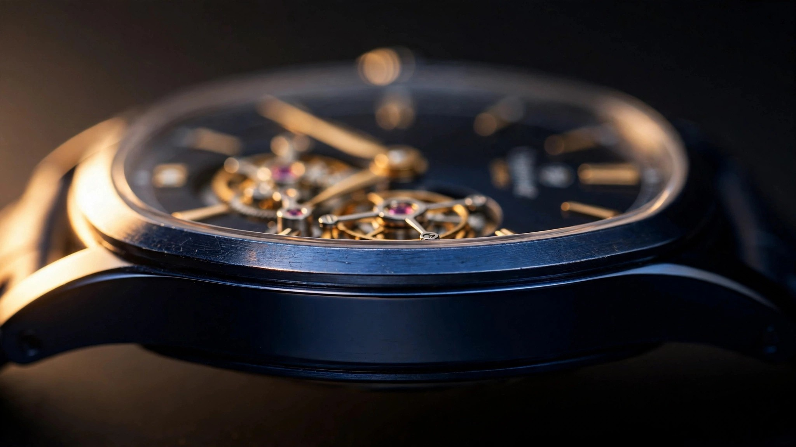

Two Millimetres with a Tourbillon: The Engineering Absurdity of Piaget's Altiplano Ultimate Concept
A flying tourbillon, a mainspring, an entire gear train, and an escapement running at 28,800 vibrations per hour, all inside a watch thinner than two stacked credit cards. The caseback is the movement, the pivots are ball bearings, and the crown winds through a worm gear because nothing else fits. Caliber 970P-UC does not make conventional sense, and that is the point.

The Budget That Does Not Exist
Consider what a conventional tourbillon requires in vertical space. A standard one-minute tourbillon needs roughly 5 to 7 millimetres of movement height, accommodating the cage, balance wheel, escapement, and the arbor connecting it all to the gear train beneath. Breguet's original 1801 patent envisioned the mechanism rotating around a central axis, with the balance and escape wheel mounted inside a cage that turns once per minute to average out positional errors caused by gravity, and every component in that arrangement stacks vertically along a single line.
Piaget's entire watch, crystal and caseback included, measures 2.00mm thick. Sapphire accounts for approximately 0.2mm of that, and the caseback, which doubles as the mainplate, takes another fraction. What remains for the actual movement, including barrel, gear train, and a flying tourbillon, is something close to 1.5mm of usable vertical space, less than the height of an ordinary tourbillon cage sitting on its own.
The Caliber 970P-UC first beat on February 7, 2017, the concept was revealed publicly at SIHH the following year, and commercial deliveries began around 2020. But the watch that exists today required Piaget to redesign roughly 90 percent of the original Altiplano Ultimate Concept's non-tourbillon movement (the Caliber 900P-UC), because adding a tourbillon to something already at the physical limit of thinness meant rethinking virtually every component and how they relate to each other spatially, leaving nothing carried over unchanged from the original architecture.
When the Case Is the Movement
In every conventional watch, the movement sits inside the case as two separate structures: the case protects while the movement operates. Piaget abandoned this distinction entirely with the original AUC, and the tourbillon version takes the same architectural bet to a more extreme conclusion.
The caseback is the mainplate, with components mounting directly into it. Jewel seats, pivot holes, barrel arbor positions, all are machined into the rear surface of the case itself, which means the case is not housing for the movement but a structural participant in every gear mesh and every bearing alignment. If the caseback flexes under wrist pressure, the movement's geometry changes. If the caseback's thermal expansion coefficient does not match the bridges', wheel positions drift, and that is why M64BC cobalt alloy matters more here than the choice of any individual movement component.
Cobalt-Chrome from the Operating Theatre
M64BC is a cobalt-chromium-molybdenum alloy developed for biomedical applications: hip prostheses, knee replacements, and spinal fixation hardware. It belongs to the ASTM F75 family, a specification for cobalt-28 chromium-6 molybdenum casting alloys used in surgical implants, where dimensional stability under cyclic loading, corrosion resistance in body fluids, and resistance to fretting wear at bone-metal interfaces are non-negotiable requirements.
In orthopaedic implant applications, the alloy's elastic modulus sits around 210 to 250 GPa, roughly double that of Grade 5 titanium (110 GPa) and comparable to surgical-grade stainless steel. For Piaget, this stiffness is not about surviving impact but about holding positional accuracy across the entire caseback-mainplate surface under the bending loads that a wrist applies daily, where a titanium caseback at 2mm total thickness would flex enough to compromise the gear train while cobalt-chrome holds firm.
M64BC also machines well by exotic-metal standards, accepts PVD coatings cleanly (the AUC wears a blue PVD treatment), and polishes to a finish that reads as luxury rather than industrial. At 41.5mm diameter and 2mm thickness, the case is essentially a rigid disc, and the alloy's high yield strength means Piaget can achieve that rigidity without adding material, which would add thickness, which is the one dimension this entire project exists to minimise.
Ball Bearings Where Jewels Should Be
A traditional tourbillon rotates on a central arbor, with two pivots, upper and lower, running in ruby jewels at the axis of rotation while the cage spins around this arbor and the balance wheel and escapement operate inside it. Height accumulates because everything stacks along a single vertical line: lower pivot, lower jewel, cage frame, balance wheel, upper cage plate, upper jewel, upper pivot, and Piaget's solution was to eliminate this entire column by building a tourbillon with no central arbor at all.
Instead, the cage is carried at its rim by ceramic ball bearings. Small ceramic balls run in a track between an inner race machined into the upper bridge and an outer race machined into the surrounding frame. The tourbillon rotates peripherally, supported at its circumference rather than its centre, spreading the load across many contact points instead of concentrating it on two jewel bearings at a single axis. This eliminates the height required for a central pivot stack and moves the rotational support out to where there is room for it, at the edges.
Six ball bearings total replace traditional jeweled pivots throughout the movement, not only at the tourbillon. The balance staff itself runs on a ball bearing instead of the conventional jewel-and-endstone arrangement. Thirteen jewels remain, down from the 20 to 25 found in typical tourbillon movements, because ball bearings have assumed several of their traditional functions.
Ceramic ball selection comes down to friction and wear characteristics at this scale: silicon nitride (Si₃N₄) ceramic bearing balls weigh roughly 60 percent less than steel equivalents, generate less friction at low speeds due to lower surface adhesion, and do not require lubrication in low-load horological applications, which matters because lubricant migration in a movement this thin, where every surface is close to every other surface, would be catastrophic. Ceramic balls also resist thermal expansion better than steel, maintaining tighter tolerances as the watch heats and cools against the wrist.
Peripheral Drive: A Spokeless Escape
Driving a rim-mounted tourbillon presents a mechanical problem that does not exist in conventional layouts. Normally, the fourth wheel meshes with a pinion on the tourbillon cage's central arbor, spinning the cage from its axis, but without a central arbor there is no central pinion and power has to reach the cage at its edge.
Piaget's solution uses a spokeless toothed wheel screwed to the lower plate of the tourbillon cage. This wheel serves double duty: it is both the driving element for the cage rotation and the bridge for the escape wheel. A fixed wheel with internal teeth (teeth cut on the inside of a ring rather than the outside) meshes with this spokeless wheel, transmitting torque from the gear train to the cage. The escape wheel then meshes conventionally with the pallet fork inside the cage, delivering impulse to the balance wheel.
Think of it as an epicyclic gear set, a planet gear rolling inside a ring gear, adapted for horological use at a scale where the teeth are fractions of a millimetre wide and the forces involved are measured in micronewtons. Geometrically, it is inherently flat, spreading the drive mechanism laterally rather than vertically, which is the entire architectural thesis of this movement.
Winding a Watch You Cannot Grip
Conventional crown winding uses a stem that enters the case perpendicular to its face, connects to a keyless works mechanism with yoke and sliding pinion, and transfers rotary motion to the barrel arbor. Crown stems typically protrude from the case by 1 to 3mm, but the AUC Tourbillon's entire case is 2mm, meaning a protruding crown would be thicker than the watch itself.
Piaget's answer is a worm gear, with the crown sitting recessed into the case edge, flat against the case band, turning a worm (a helical gear with a single continuous tooth wrapped around a cylinder) that meshes with a worm wheel connected to the barrel. Worm gears convert rotational input at 90 degrees, which is needed here because the crown axis is parallel to the movement plane while the barrel arbor is perpendicular to it, and they do so with an inherently low profile because the worm itself is a cylinder that can be made arbitrarily thin in one dimension.
Efficiency is the painful trade-off. Worm gears are notoriously lossy, typically transmitting 40 to 90 percent of input torque depending on helix angle and friction conditions. In a watch where every millinewton-metre counts, losing 20 to 60 percent of your winding effort to the worm mesh is significant. But the alternative, a conventional crown protruding from a 2mm case, simply does not exist as a physical possibility.
The Mainspring Problem
Adding a tourbillon to the AUC required 25 percent more mainspring torque than the original non-tourbillon version, because a tourbillon cage, even one as minimal as Piaget's, adds rotational inertia and friction from its bearing surfaces while the escapement now operates inside a rotating frame, adding windage losses and gravitational variation to the energy budget that collectively draw more power from a mainspring that has nowhere to grow.
In a conventional watch, you solve this by lengthening the mainspring, increasing barrel diameter, or adding barrels, but none of these work within the AUC's constraints. Barrel height is constrained to the same sub-1.5mm movement envelope, barrel diameter is limited by the 41.5mm case, and adding a second barrel is geometrically impossible given the space consumed by the tourbillon, gear train, and worm-gear crown mechanism.
Piaget's solution was metallurgical: a mainspring alloy with higher elastic energy density per unit volume, capable of storing 25 percent more energy in the same physical envelope. Resulting power reserve sits at 35 to 40 hours at 4 Hz, down from the non-tourbillon AUC's approximately 44 hours, reflecting the net cost of the tourbillon's additional energy consumption after the mainspring upgrade partially compensated. Forty hours is adequate but not generous, and a weekend without wearing the watch means rewinding on Monday morning.
Finishing at the Edge of Visibility
Some wheels in the 970P-UC measure 0.12mm thick. For reference, a human hair ranges from 0.05 to 0.10mm. These wheels are thinner than most pasta, thinner than a standard sheet of printer paper (0.10mm), and only marginally thicker than household aluminium foil (0.016mm). Chamfering and polishing components at this scale requires tooling that operates at the limit of mechanical resolution, because the chamfer itself cannot exceed a few microns before it begins consuming the functional geometry of the wheel tooth.
Banking pins for the pallet fork are not separate components press-fitted into a plate, as they would be in a standard movement. They are cut directly into the rim of the tourbillon cage, reducing part count and eliminating the height that separate pins would add. The stud holder for the hairspring anchor is machined directly into the titanium cage structure rather than being a discrete attached part. Every opportunity to eliminate a stacked interface has been taken, because every interface adds height, and height is the enemy.
The tourbillon cage itself is titanium, chosen for its strength-to-weight ratio at this scale. A heavier cage in steel or brass would increase rotational inertia, demanding even more mainspring torque and reducing an already-constrained power reserve further.
The Ultra-Thin Arms Race
Piaget has owned the ultra-thin conversation since the 1960s, when the Caliber 12P (2.3mm thick automatic) and 9P (2.0mm hand-wound) set records that stood for decades. But Bulgari changed the dynamic starting in 2014 with the Octo Finissimo series, systematically claiming world records in tourbillon (3.95mm in 2014), minute repeater (6.85mm in 2016), automatic (5.15mm in 2017), and chronograph GMT (6.9mm in 2019).
The AUC Tourbillon at 2.00mm answers Bulgari's 3.95mm Octo Finissimo Tourbillon by cutting the thickness nearly in half, but the approaches are fundamentally different. Bulgari's Finissimo Tourbillon uses a peripheral rotor for automatic winding and retains conventional jeweled pivots, achieving thinness primarily through meticulous component miniaturisation within a recognisable architectural framework. Piaget threw out the framework entirely: manual winding only, ball bearings instead of jewels, case and movement merged into one structural unit, and a crown mechanism borrowed from industrial gearing rather than horological tradition.
Richard Mille's RM UP-01 Ferrari at 1.75mm is thinner overall, but it uses no tourbillon, and its NTPT carbon case achieves rigidity through composite layup rather than metallic stiffness. Comparing the two is instructive but ultimately unfair, because Piaget carried a tourbillon and its associated power penalties through the same dimensional bottleneck that Richard Mille navigated without one.
Brilliant Engineering or Brilliant Hubris?
Full disclosure: I have never handled the Altiplano Ultimate Concept Tourbillon. At $705,000 for the 2026 tiger-eye stone dial edition shown at Watches and Wonders, opportunities to casually evaluate one on the wrist are limited. But the engineering record is clear enough to form a view.
This watch is a dead end, and I mean that as a compliment, because nothing about the 970P-UC was designed to scale into broader production. Ball-bearing tourbillons carried at the rim cannot be miniaturised further or adapted into thicker, more practical calibres where conventional pivots work fine. The worm-gear crown is a concession to geometry that no watchmaker would voluntarily choose in a movement with normal dimensional headroom. The caseback-as-mainplate architecture means every case must be machined to movement-grade tolerances, eliminating the manufacturing separation between case and movement that allows the entire Swiss industry to function through specialised suppliers, and none of these solutions migrate to Piaget's broader product line.
None of them need to. The AUC Tourbillon exists to demonstrate that a tourbillon can operate inside two millimetres, a proof of concept in the most literal sense, a statement about what is physically possible when you subordinate every other consideration, including longevity, serviceability, power reserve, and cost, to a single dimensional constraint. Breguet invented the tourbillon to improve timekeeping accuracy, and Piaget put one inside a watch that is measurably worse at everything except being thin.
Whether that constitutes hubris depends on whether you believe watchmaking should always optimise for practical outcomes, or whether occasionally it should just answer the question "can this be done?" and leave the practical implications for someone else to worry about. Piaget answered the question, and the answer is 2.00mm, 13 jewels, 6 ball bearings, a worm gear, and a confidence that borders on the unreasonable. It is magnificent, and it will never be your daily wear.
| Piaget Altiplano Ultimate Concept Tourbillon | |
|---|---|
| Reference | G0A45500 (original blue PVD) |
| Case material | M64BC cobalt alloy (cobalt-chromium-molybdenum, ASTM F75 family), blue PVD |
| Diameter | 41.5 mm |
| Thickness | 2.00 mm (crystal included) |
| Crystal | Sapphire, approx. 0.2 mm thick |
| Movement | Caliber 970P-UC, hand-wound, integrated caseback-mainplate architecture |
| Frequency | 4 Hz (28,800 vph) |
| Tourbillon | One-minute flying tourbillon, peripheral ceramic ball-bearing mount, titanium cage |
| Components | 13 jewels, 6 ball bearings |
| Power reserve | 35-40 hours |
| Winding | Worm-gear crown, recessed into case band |
| Functions | Hours, minutes |
| W&W 2026 | Tiger-eye stone dial and Khaki Green editions ($705,000 for tourbillon) |
| First beat | February 7, 2017 |